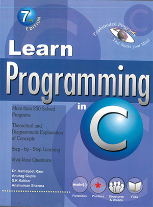
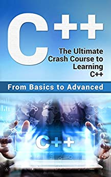
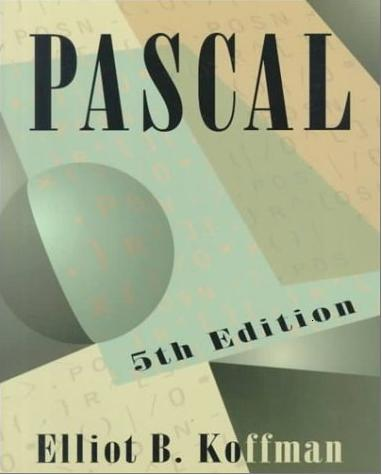

𝕷𝖎𝖇𝖗𝖆𝖗𝖞 𝕸𝖆𝖓𝖆𝖌𝖊𝖒𝖊𝖓𝖙 𝕾𝖞𝖘𝖙𝖊𝖒
𝐏𝐑𝐎𝐂𝐄𝐃𝐔𝐑𝐀𝐋 𝐏𝐑𝐎𝐆𝐑𝐀𝐌𝐌𝐈𝐍𝐆 𝐋𝐀𝐍𝐆𝐔𝐀𝐆𝐄
C (pronounced /ˈsiː/ – like the letter c) is a general-purpose computer programming language. It was created in the 1970s by Dennis Ritchie, and remains very widely used and influential. By design, C's features cleanly reflect the capabilities of the targeted CPUs. It has found lasting use in operating systems, device drivers, protocol stacks, though decreasingly[7] for application software. C is commonly used on computer architectures that range from the largest supercomputers to the smallest microcontrollers and embedded systems. A successor to the programming language B, C was originally developed at Bell Labs by Ritchie between 1972 and 1973 to construct utilities running on Unix. It was applied to re-implementing the kernel of the Unix operating system.[8] During the 1980s, C gradually gained popularity. It has become one of the most widely used programming languages,[9][10] with C compilers available for practically all modern computer architectures and operating systems. C has been standardized by ANSI since 1989 (ANSI C) and by the International Organization for Standardization (ISO).C is an imperative procedural language, supporting structured programming, lexical variable scope and recursion 𝐑𝐞𝐚𝐝 𝐦𝐨𝐫𝐞..
buy C at Amazon
C++ (/ˈsiː plʌs plʌs/, pronounced "C plus plus") is a high-level general-purpose programming language created by Danish computer scientist Bjarne Stroustrup and first released in 1985 as an extension of the C programming language, or "C with Classes". The language has expanded significantly over time, and modern C++ now has object-oriented, generic, and functional features in addition to facilities for low-level memory manipulation. It is almost always implemented as a compiled language, and many vendors provide C++ compilers, including the Free Software Foundation, LLVM, Microsoft, Intel, Embarcadero, Oracle, and IBM, so it is available on many platforms.[13]
C++ was designed with systems programming and embedded, resource-constrained software and large systems in mind, with performance, efficiency, and flexibility of use as its design highlights.[14] C++ has also been found useful in many other contexts, with key strengths being software infrastructure and resource-constrained applications,[14] including desktop applications, video games, servers (e.g. e-commerce, web search, or databases), and performance-critical applications (e.g. telephone switches or space probes)𝐑𝐞𝐚𝐝 𝐦𝐨𝐫𝐞..
Buy C++ at Amazon

Java is a high-level, class-based, object-oriented programming language that is designed to have as few implementation dependencies as possible. It is a general-purpose programming language intended to let programmers write once, run anywhere (WORA),[17] meaning that compiled Java code can run on all platforms that support Java without the need to recompile.[18] Java applications are typically compiled to bytecode that can run on any Java virtual machine (JVM) regardless of the underlying computer architecture. The syntax of Java is similar to C and C++, but has fewer low-level facilities than either of them. The Java runtime provides dynamic capabilities (such as reflection and runtime code modification) that are typically not available in traditional compiled languages. As of 2019, Java was one of the most popular programming languages in use according to GitHub,[citation not found][19][20] particularly for client–server web applications, with a reported 9 million developers.[21]
Java was originally developed by James Gosling at Sun Microsystems. It was released in May 1995 as a core component of Sun Microsystems' Java platform 𝐑𝐞𝐚𝐝 𝐦𝐨𝐫𝐞..
Buy Java at Amazon

Pascal is an imperative and procedural programming language, designed by Niklaus Wirth as a small, efficient language intended to encourage good programming practices using structured programming and data structuring. It is named in honour of the French mathematician, philosopher and physicist Blaise Pascal.
Pascal was developed on the pattern of the ALGOL 60 language. Wirth was involved in the process to improve the language as part of the ALGOL X efforts and proposed a version named ALGOL W. This was not accepted, and the ALGOL X process bogged down. In 1968, Wirth decided to abandon the ALGOL X process and further improve ALGOL W, releasing this as Pascal in 1970.
On top of ALGOL's scalars and arrays, Pascal enables defining complex datatypes and building dynamic and recursive data structures such as lists, trees and graphs. Pascal has strong typing on all objects, which means that one type of data cannot be converted to or interpreted as another without explicit conversions. 𝐑𝐞𝐚𝐝 𝐦𝐨𝐫𝐞..
Buy Pascal at Amazon
Copyright@2023 library Management System. All rights reseved